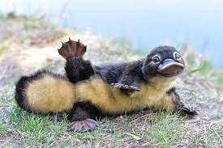

This is a Ornithorhynchus anatinus

L'ornithorynque (Ornithorhynchus anatinus) est un animal semi-aquatique endémique de l'est de l'Australie et de la Tasmanie. C'est l'une des cinq espèces de l'ordre des monotrèmes, seul ordre de mammifères qui pond des œufs au lieu de donner naissance à des petits complètement formés (les quatre autres espèces sont des échidnés). C'est la seule espèce actuelle de la famille des Ornithorhynchidae et du genre Ornithorhynchus bien qu'un grand nombre de fragments d'espèces fossiles de cette famille et de ce genre aient été découverts
CLICK HEREEEEEEEEEEE